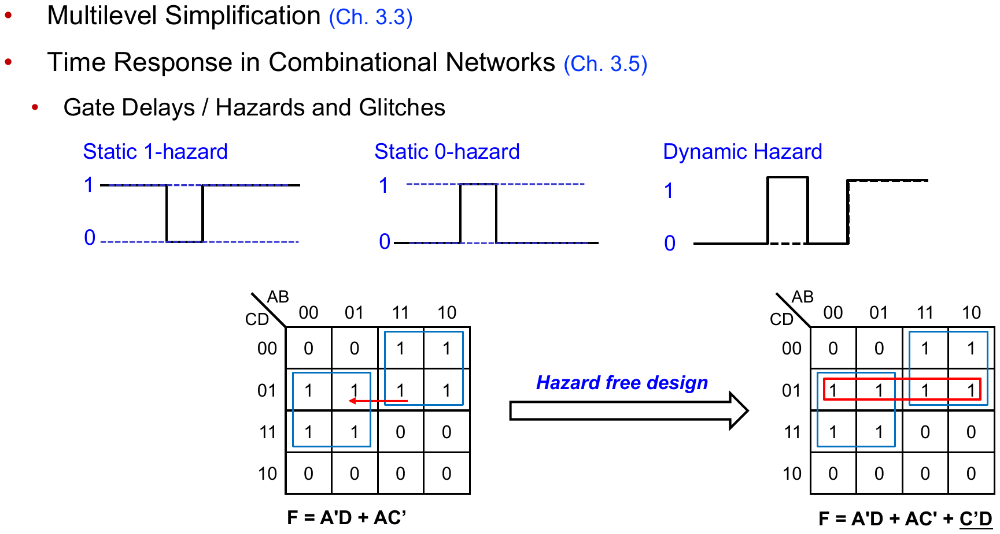

← 목차
L07 · 시간 응답 — 해저드
L07. 시간 응답 — 해저드
Time Response · 중간고사 범위
핵심 정리.
해저드 = 한 입력의 변화가 지연 다른 두 경로로 도달해 출력이 순간 잘못 튀는 현상 ·
static-1 (1→0→1) / static-0 (0→1→0) / dynamic (여러 번 요동) ·
제거: K-map의 인접 묶음 사이를 잇는 중복 항(consensus) 추가 — F = A′D + AC′ → F = A′D + AC′ + C′D
7.1게이트 지연과 글리치
실제 게이트는 입력 변화 후 출력이 바뀌기까지 지연(gate delay)이 있다. 같은 입력 변화가 서로 다른 경로(지연 다름)로 출력에 도달하면 순간적으로 잘못된 값(glitch)이 나타난다.
7.2해저드 3종
| 종류 | 출력 파형 | 의미 |
|---|---|---|
| static-1 | 1 → 0 → 1 | 1이어야 할 출력이 순간 0 |
| static-0 | 0 → 1 → 0 | 0이어야 할 출력이 순간 1 |
| dynamic | 0→1→0→1 … | 전이 중 여러 번 요동 |
static 해저드는 K-map에서 한 변수가 바뀌며 서로 다른 묶음 사이를 넘나드는 전이에서 발생.
예 — hazard-free 설계
두 묶음이 맞닿아 있으면(빨간 전이) 경계를 넘을 때 glitch → 두 묶음을 잇는 세 번째 항 C′D를 추가하면 전이 중에도 출력이 유지된다.

한 줄 정리 · 해저드의 원인은 경로 지연 차, 해법은 K-map 인접 묶음을 잇는 consensus 항 추가.